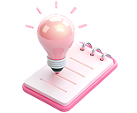
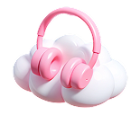
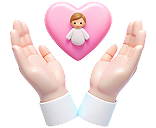

Як позбутися важкості в грудях і «клубка» в горлі – без таблеток і
психотерапії
Встигніть приєднатись до кінця відліку і забрати бонуси

Топ 5-технік самодопомоги при гострому стресі
Для швидкої стабілізації стану

Аудіо-практика “Спокій перед сном”
Щоб засинати легко, без думок і тривог

8 способів допомогти своїй дитині у стресовій ситуації
Щоб захистити і зберегти здоров'я найдорожчих
:
:
Цей курс для тебе,
якщо ти:
Відчуваєш «клубок» у горлі після стресу чи втрати
Маєш відчуття важкості, стиснення у грудях, не можеш вдихнути чи
позіхнути наповну, але лікарі не знаходять органічної патології
Відчуваєш напруження у мʼязах обличчя, особливо жувальних, аж до
скреготу зубів уночі
Відчуваєш напруження і біль у шиї та комірцевій зоні та головні
болі напруження
Хочеш позбавитися цих проблем фізіологічно, без ліків
Відчуваєш, що загубила себе у тривозі, переживаннях, турботі про
інших
Хочеш знову говорити вільно, дихати глибоко і відчувати тіло живим
Про автора
Оксана Дуда-Ільчук
Біолог, хімік, викладач природничих дисциплін із понад 20-річним
досвідом
Навчала студентів-медиків медичній хімії, медичній біології та
основам профілактичної медицини
Авторка програм для жінок із управління стресом методами
фізіологічної саморегуляції — програм, які допомагають повернутися
до життя без антидепресантів і постійної потреби в психотерапії
Поєднує науку і серце, щоб з ніжністю і турботою допомагати жінкам
звільняти тіло від стресу й запускати природні процеси
самозцілення
Цей курс створений спеціально для жінок, які відчувають
постстресове напруження у зоні горла, шиї та грудей
Якщо ти маєш відчуття “клубка” в горлі, важкість у грудях
або не можеш вдихнути наповну — ти в правильному місці
Ми працюємо з тілом, диханням і нервовою системою — саме
це дає глибокий і стійкий результат
Це точно безпечно?
Усі практики фізіологічні та безпечні
Якщо лікар не виявив органічної патології, але симптоми
залишаються — причина часто в стресі. І саме з його
наслідками ми працюємо: м’яко, без ліків і з повагою до
твого тіла
Чим цей курс кращий за безкоштовні відео в інтернеті?
Курс — це не набір випадкових вправ
Це системна робота з тілом, побудована на розумінні
анатомії та фізіології. Ми не маскуємо симптоми — ми
усуваємо їхню причину, тому результат буде глибоким і
стійким
У мене дуже мало часу. Я зможу проходити курс?
Так, зможеш
Уроки короткі — кожен займає не більше 10–20 хвилин
Я рекомендую ставитися до занять не як до ще одного
“треба”, а як до можливості подарувати собі 15 хвилин
любові і турботи щодня
Я не маю досвіду, у мене не вийде...
Цей курс створений саме для того, щоб вийшло навіть у тих,
хто ніколи не займався подібними практиками
Маючи понад 20 років досвіду роботи в освіті, я створила
максимально зрозумілий і структурований курс
Тобі не потрібно нічого знати наперед — просто довірся
мені, і я проведу тебе до потрібного результату